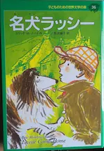

2021
Novembre
-
05 —
 Le Piège de la Belle au bois dormant de Mary Higgins Clark et Alafair Burke
Le Piège de la Belle au bois dormant de Mary Higgins Clark et Alafair Burke
-
02 —
 Le bureau des affaires occultes d’Éric Fouassier
Le bureau des affaires occultes d’Éric Fouassier
Octobre
-
31 —
Inktober, deuxième partie


- 26 — Sept jours pour une éternité de Marc Levy
- 20 — Cyrano de Bergerac d’Edmond Rostand
-
16 —
Inktober, première partie

- 09 — L’Ickabog de J.K. Rowling
-
03 —
Métaphysique psychotique et drame
 siva (Philip K. Dick), Roméo et Juliette (William Shakespeare)
siva (Philip K. Dick), Roméo et Juliette (William Shakespeare)
Mars
- 20 — Plan du potager
- 20 — Mars au jardin
Février
- 15 — Le potimarron
- 15 — Mémo associations de plantes au potager
- 15 — Le melon
- 15 (édité) — Le basilic
Janvier
- 29 — Février au jardin
- 28 — Janvier au jardin
- 26 — Poèmes
- 26 —  Avancée dans l’apprentissage du japonais
-
20 —
 Défilé de robots d’Isaac Asimov
Défilé de robots d’Isaac Asimov